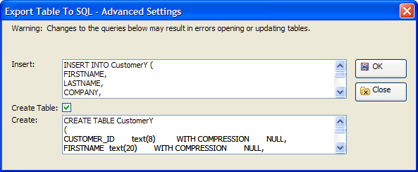

Export Table to SQL - Advanced Settings Dialog
The Export Table to SQL - Advanced Settings dialog allows you to modify the SQL INSERT statement that adds records to a back-end database table and the SQL CREATE TABLE statement that creates a new table.

Limitations
Desktop applications only.
See Also